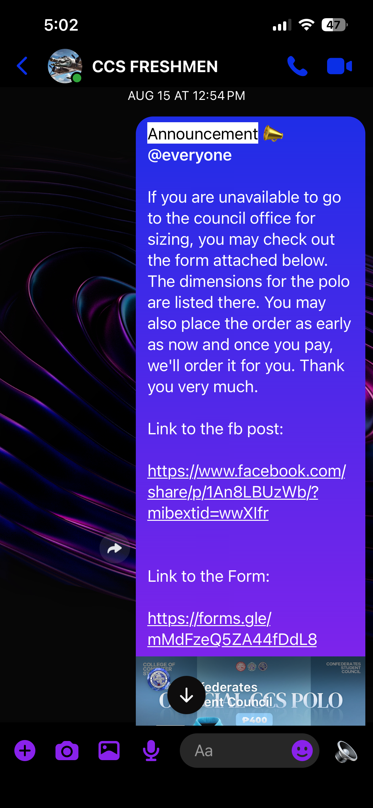

I was a spectator in the Balik Talent lecture. I actually can’t really remember what the speakers were talking about but I have 2 main takeaways from the lecture that I will probably carry with me even until my professional career.
First, one of the speakers, Prof. Elizabeth Karla Aguilan talked about her journey from CCS to taking Law. That has always been a consideration for me ever since I talked about this career opportunity with my cousin who is now a practicing lawyer in Manila. It was only then that he told me any course could be a “pre-law” and when you practice, you can choose your focus. Prof. Aguilan further “made the case” that it is in fact very possible and she has learned many valuable skills in CCS that she carried over to her law career.
Second, I think it was during the open forum when someone asked about GPA’s and getting latin honors and how much that helped in getting job opportunities. I thought that it would be very difficult to apply to companies with a low GPA or with no latin honors. The fact is that it will only make your CV look nice, but to keep jobs and stay in the company, it is work ethic and hard work that keeps you there.
I stopped worrying so much about my grades after hearing the reality from the professionals. Although I would still like latin honors (that’ll be so hard fr), it is no longer the end all be all if I can’t graduate with latin honors, but a nice bonus.
CCS Freshman Orientation
In the CCS freshman orientation, I was only a participant. I sat in the front next to some of the faculty. I remember trying to take note of each of the faculty, but the presentation was so fast that I couldn’t take note of their position and titles anymore, but only their names and which department they were in.
The freshman orientation was another necessary event for us freshies. I always believe it is important to know the people that are impressing their knowledge to us. I believe it is important to know their qualifications and whether or not they are actually “legit” and know what they are talking about or not.
University Freshman Orientation
In the University freshman orientation I was also just a spectator. I remember having a good sleep at the luce auditorium. I also remember it ended so much later than they said it should have and the CCS council took our attendance with their website and qr codes.
I don’t remember too much of what was talked about in the freshman orientation. I remember feeling so much pride when CCS was called to shout and we were so much quieter than the other colleges. And the last part was about student insurance, and I was reminded how blessed we are that the school even has this kind of insurance for all the students. I hope we don’t ever need to use it.
CCS Council Announcement: My time in Confed
This reflection will be about my time in the Confederates Student Council as the temporary P.R.O. of CCS. I was first approached by Justine Sato and he was already appointed by Gianne Gaudan to be the Secretary. He asked me if I wanted to be the PRO and I initially said no because I didn’t want to be part of the council. But after considering everything and what exactly I would be doing, I agreed.
As the P.R.O., I was in charge of announcing all the college events to the students in their respective group chats and used my social media account to share the council’s posts and announcements. Because the council was not very organized, most of the people part of the council took up more than just one role. I was the P.R.O. but I was also part of stationing at the Confed office to receive payments for the Polo and Council Fee.
Overall, I got to see what council work is like, and I can say with utmost confidence, honesty, and 100% certainty that I still do not want to be a part of the council. I just feel like I could be using my time for other things in my life other than more work towards school. But I am very thankful to Justine and Gianne for supporting me and appointing me this opportunity.

ROTC Presentation of Sponsors
This ROTC presentation of sponsors was the 2nd event of the SUROTC unit of the 1st Semester. The 1st event was the Parade and Review, but I didn’t participate in that event but just watched. This was also held in the afternoon at 3pm until 6pm after the morning session at 6am.
This event was a lot of fun. People give ROTC a very bad reputation, although I can understand why it does, I can also see the purpose for ROTC and the effect it is trying to influence on its students. This annual presentation of sponsors felt like 2 years while we were just standing there and waiting for the event to end.
After the event was over, we felt a sense of accomplishment and pure relief. I was so relieved that it was over and finally everything that we were practicing since day 2 came to fruition at that moment. Although we weren’t perfect, it was enough for us.